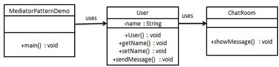

仲介者パターン
仲介者パターン（Mediator Pattern）は、複数のオブジェクトとクラス間の通信の複雑さを低減するために使用され、振る舞い型パターンに属します。
仲介者パターンは、一連のオブジェクト間の相互作用をカプセル化するための仲介オブジェクトを定義します。仲介者は、各オブジェクトが明示的に相互参照する必要をなくし、それによって結合を疎結合にし、オブジェクト間の相互作用を独立して変更できるようにします。
紹介
意図
仲介者オブジェクトを導入して複数のオブジェクト間の相互作用をカプセル化および調整し、オブジェクト間の結合度を低減します。
主な解決する問題
- オブジェクト間の複雑な一対多の関連性の問題を解決し、オブジェクト間の高度な結合を回避し、システム構造を簡素化します。
使用シーン
- システム内の複数のクラスが相互に結合し、ネットワーク構造を形成している場合。
実装方法
- 仲介者インターフェースを定義する：仲介者が必ず実装しなければならないインターフェースを規定します。
- 具体的な仲介者を作成する：仲介者インターフェースを実装し、各同僚オブジェクトの相互作用を調整するロジックを含みます。
- 同僚クラスを定義する：各オブジェクトは明示的に相互参照する必要はなく、仲介者を通じて相互作用を行います。
キーコード
- 仲介者：オブジェクト間の相互作用ロジックをカプセル化します。
- 同僚クラス：仲介者を通じて通信します。
応用例
- WTO：中国がWTOに加盟した後、各国はWTOを通じて貿易を行い、二国間関係を簡素化しました。
- 空港管制システム：航空機の離着陸、滑走路の使用などを調整します。
- MVCフレームワーク：コントローラーがモデルとビューの仲介者として機能します。
長所
- 複雑さの低減：複数のオブジェクト間の一対多の関係を一対一の関係に変換します。
- 疎結合化：オブジェクト間は直接参照せず、仲介者を通じて相互作用します。
- デメテルの法則に適合：オブジェクトは仲介者を知っているだけでよく、他のオブジェクトを知る必要はありません。
短所
- 仲介者の複雑さ：仲介者が肥大化して複雑になり、保守が困難になる可能性があります。
使用上のアドバイス
- システム内のオブジェクト間に複雑な参照関係が存在する場合、仲介者パターンの使用を検討します。
- 仲介者を通じて複数のクラスの動作をカプセル化し、過剰なサブクラスの生成を回避します。
注意事項
- 責任が不明確または混乱している状況で仲介者パターンを使用することは避けてください。仲介者が過剰な責任を負う可能性があります。
構造
仲介者パターンには、以下の主要な役割が含まれます：
仲介者（メディエーター）：各同僚オブジェクトと通信するためのインターフェースを定義し、各同僚オブジェクト間の関係を管理します。通常、さまざまな相互作用イベントを処理するための1つ以上のイベント処理メソッドが含まれます。
具体的な仲介者（Concrete Mediator）：仲介者インターフェースを実装し、各同僚オブジェクト間の通信ロジックの実装を担当します。各同僚オブジェクトへの参照を保持し、それらの相互作用を調整します。
同僚オブジェクト（Colleague）：仲介者と通信するためのインターフェースを定義します。通常、メッセージを送信するメソッドとメッセージを受信するメソッドが含まれます。
具体的な同僚オブジェクト（Concrete Colleague）：同僚オブジェクトのインターフェースを実装し、実際に相互作用に参加するオブジェクトです。自分のメッセージを仲介者に送信し、仲介者が他の同僚オブジェクトに転送します。
実装
チャットルームの例を通じて仲介者パターンをデモンストレーションします。この例では、複数のユーザーがチャットルームにメッセージを送信でき、チャットルームはすべてのユーザーにメッセージを表示します。2つのクラスを作成しますChatRoomとUser。UserオブジェクトはChatRoomメソッドを使用してメッセージを共有します。
MediatorPatternDemo、デモクラスはUserオブジェクトを使用してそれらの間の通信を表示します。

ステップ 1
仲介クラスを作成します。
ChatRoom.java
ステップ 2
user クラスを作成します。
User.java
ステップ 3
使用してUserオブジェクトでそれらの間の通信を表示します。
MediatorPatternDemo.java
ステップ 4
プログラムを実行し、結果を出力します：
Thu Jan 31 16:05:46 IST 2013 [Robert] : Hi! John! Thu Jan 31 16:05:46 IST 2013 [John] : Hello! Robert!その他の拡張